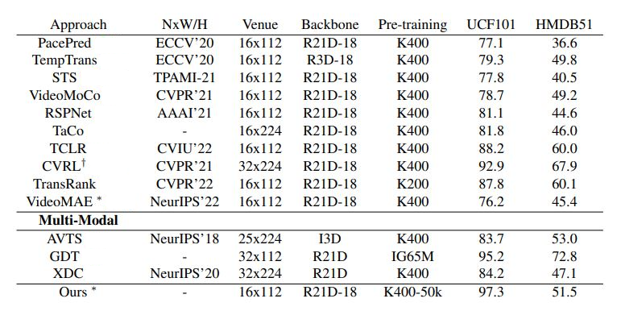

<!DOCTYPE HTML>

<html>

<head>
  <title>Benchmarking SSL on Video Representation Learning and KD</title>

  <link rel="stylesheet" href="test.css">
</head>

<body>
  <br>

  <center><span style="font-size: 44px; font-weight: bold;">Benchmarking SSL on Video Representation Learning and KD</span></center><br/>
<br>
  <table align=center width=600px>
    <tr>
      <td align=center width=150px>
        <center>
          <span style="font-size: 22px">
            <a href="#" target="_top">[Home]</a>
          </span>
        </center>
      </td>

      <td align=center width=150px>
        <center>
          <span style="font-size: 22px">
            <a href="main_paper.pdf" target="_top">[Paper]</a>
          </span>
        </center>
      </td>

      <td align=center width=150px>
        <center>
          <span style="font-size: 22px">
            <a href="supple.pdf" target="_top">[Supplementary]</a>
          </span>
        </center>
      </td>


    </tr>
  </table>
<!--
  <table align=center width=800px>
    <center></center> <br>
    <center> Performance of different dataset subset sizes. </center>
  </table>
-->
<br>
  <center>
    <h2>Abstract</h2>
  </center>
  <div style="width: 750px; margin: 0 auto; text-align=center; text-align: justify; text-justify: inter-ideograph;">
    Self-supervised learning has become the cornerstone in
  training deep neural networks to alleviate the requirement
  of a large number of labeled samples, especially for the
  video domain. Existing works in video domain use varying
  settings/backbones to show that one pretext is better than
  the other, but it’s challenging with no standard benchmark.
  We present a benchmark with similar constraints for all pretext tasks and compare existing approaches on the same
  ground. In our study, with more than <b>400+ experiments </b>,
  first we propose a new categorization for self-supervised
  pretext tasks. Then, we perform an in-depth study on
  different key factors including: <b>pre-training dataset size,
  task complexity, effect of out-of-distribution and noisy
  datasets,</b> which are important for self-supervised learning. Furthermore, we analyze the complementary nature
  of features learned under such scenarios. More specifically,
  we utilize knowledge distillation to study this aspect and
  demonstrate how this can be used to train better models.
  We observe that <b>models learn complementary knowledge</b>
  under different conditions and we integrate this knowledge
  in a model which shows <b>state-of-the-art performance</b> for
  activity recognition on UCF-101 dataset. Our work will
  pave the way for researchers for a better understanding of
  self-supervised pretext tasks in video representation learning.

  </div>
   <br>
  <br>
<hr> <br>
  <center>
    <h2> Comparison with SOTA Approaches </h2>
    <center>Comparison with previous approaches pre-trained on K400 full set. <br>Ours ( ∗best performing) is RSPNet pretrained on
30k subset of K400. <br> † represents model with different backbone than R21D. ∗reproduced results</center>
  </center><br>
  <table align=center width=800px>
    <center>
      
      </center>


  </table>
  <br>
<hr>
<center>  <h2>Pretext Task Categorization </h2> </center>
<div style="width: 750px; margin: 0 auto; text-align=center; text-align: justify; text-justify: inter-ideograph;">
  <p>
    We propose a new set of categorization of video pretext
tasks on the basis of transformations applied to data during
pre-training stage: spatial-based, temporal-based and spatiotemporal. Spatial-based transformations includes random crops, reshuffling of spatial patches, temporal consistent data augmentation or rotation of images/patches.
Temporal-based tasks involves permutation classification
of frames/clip, order verification, clips sampling at different paces, or, contrastive learning from temporal triplets.
Spatiotemporal-based tasks includes those in which we
modify both of these parameters simultaneously. Like dilated sampling and frame reconstruction together, shuffling
spatial and temporal domain, or, speed prediction and contrastive visual features.
</p>
</div>
<br>
<center>
<svg xmlns="http://www.w3.org/2000/svg" xmlns:xlink="http://www.w3.org/1999/xlink" version="1.1" width="641px" height="321px" viewBox="-0.5 -0.5 641 321" content="&lt;mxfile host=&quot;app.diagrams.net&quot; modified=&quot;2022-12-05T13:41:04.071Z&quot; agent=&quot;5.0 (Windows NT 10.0; Win64; x64) AppleWebKit/537.36 (KHTML, like Gecko) Chrome/108.0.0.0 Safari/537.36&quot; etag=&quot;4uGQsxpkwbli7OIS2mk4&quot; version=&quot;20.6.0&quot; type=&quot;google&quot; pages=&quot;3&quot;&gt;&lt;diagram id=&quot;TDC5CVf3lT_7FmuP_luK&quot; name=&quot;Page-1&quot;&gt;7Vxtk5o6FP41ztz7YTuQAOrHqvsy0253Z217d++XOxGipiKxEHzpr78BgoIisosiKHamY06SQ8jz5Jyc5LgN2J0u7200Gz9SA5sNIBnLBuw1AGgDhf/vCVaBQIVaIBjZxAhE8kbQJ3+wEEpC6hIDO7GGjFKTkVlcqFPLwjqLyZBt00W82ZCa8afO0AjvCPo6Mnel/xCDjQNpS5U28gdMRuPwybIkaqYobCwEzhgZdBERwdsG7NqUsuDbdNnFpjd34bwE/e721K4HZmOLZenwYD5bbHI/eEPak9PrTkbt5fQGirGxVfjC2ODvL4rUZmM6ohYybzfSjk1dy8CeVomXNm2+UjrjQpkLf2HGVgJM5DLKRWM2NUUtXhL26nX/BFRRfItU9ZZCtV9YhQWL2avXaOHNV6GGxU03vxT2G1KLiZHIiih3qUlt/3Wh97njU9bZnU4xww51bV1Mzpv7n/nyNNBf7zsP/35BzH6ef7sBgpbIHmGW0k6sBG+CIw8QYN1jOsV83LyBjU3EyDxOQCR4PFq320DNvwi034G8UiNfGPLwXMinjXqOTFc8qQE0k4+/M+BfRsyfkkDgTVmMJNpvl4YVN44/uZ95A1mZLYNuoj5U1EMMOZg5oUI+4EBn/DlcHHn2Fi83rPN4shgThvsz5AOz4D4nzrAhMc0IyMPhEOg6lzvMphMcqTG0gaZqafDPsc3wMhUwUQtDGy+cnByWFxuXIWtCNo64i9CNHH11a5Vf3c3zL2+YcXnLoFSWvVl57CsEvVwq0w4Pm/Znmz8JEYtYoxNY321gtq0x1vZY42Z7IEnHscbKljUGUoI1Voq0xu16ReZekUrGFdkslS0Ow9ga+gKg18oFvVxDXxj0aqncsHLYDd8RCzP3kr2wrMa8MGwleGH1OF74h4Ptp8Ev7/wPSCYaYDM+6yKM1ddvuglTfZIOh7uRa9jXDQU/unfcnMsRuNyEMDYe3XrvYRJrEgyHa+AKPvlI+VWpJFIj0ytIdypCqN6/JEJo/id5ZUN4JKK04ts1RdslSjuBJ/D9POHFCFWKo87DY69zo+ahjqdBzUwd7Uqpo8oXR50emXMfobRycCdUkZU9zeLZs48j+1l1CvZcnuH5onix74eZ43XPyhpZLp42pTA6oHlxtOn3f4IctOn35yAzbcCV0gYm3BGcjjYZQ1awE3jUIWtKyJo8iQkxa3LDkp1X1LkARYJ/thOL1HEnHFmkeRTJ/+z3KOsDjR5dWNzsYjTlqr4jZxK9Ed65dk70Lx/1Cvtvfg+ek4i74yNY/7Yat/6JN8RVOg35rDNCLa6mayLHIUOio0Dw4V0D8jXqMXUJu4iU1XScXUT67iBPNHMEHsmStrX7TLrcSiKSUp3tZ9ckM67khQ8PE26RcpBK56rsUE9mNh3x/KRibEqIZU7Ipoy+qU5oOMLGpJ1xYwJKtitt1eAXCD4oFfiw+mlsFQIflitBORx3QkjizJAVo8V701J34pMO0icDauFDYUnw5MomqmpahjCk0ETV9a8jqrvEi81UTbXbh9f42fIVk8dd58gUCb5UKvBhvbUrEvxyJUaG407LkepPkWkmO+RcnrcM6VHNLOc4hSYpg/r8/wjLUcsaabXLtRzrnwMWCX6rXOCrNfgFgl8yR6wddsSP2CDu9Eo8saKou564SldzXb/jh29MoJH1ngScIVPwLLk7LRDPZVfBLkUqnvL1kos09jtI07pW0jQvjzR/cX0d+e9c1AFydu60i+fOWVKTt7mjXZ7B6Y/d4dDE3zDLQR4nUJKVP1Aqnj9nsj0Z7vWlihPot4vxn7wECpRkJtC1JLlvEygpW/mEBMp4gFyfWOWPW2HWjFVYroxVuD9jdR2dfvXe6UrCVq19ugPkQuz5T2Jg2l+QPDmkc0+Hw3VkNujX8ivbbYPevLwfuz3SAcm7oZz6OjKz53oOQLa2A8XuJ7lo83cy/eaRPzYKb/8H&lt;/diagram&gt;&lt;diagram id=&quot;DrvAcv14s-cCXCBLaMIi&quot; name=&quot;Page-2&quot;&gt;5Zrfd5owFMf/Gh/1QJBQHjvttnP2q1u30/VpJ0LUtJG4JFTdX78AiQRQR1vn1PnQer9JLnDvx/Te2I43mC3fcDSffmAxph3gxMuON+wAEIK++pkJq0LwPVgIE07iQnJL4Yb8wlp0tJqSGIvKRMkYlWReFSOWJDiSFQ1xzhbVaWNGq1edowluCDcRok31lsRyWqgXvlPqbzGZTM2VXUePzJCZrAUxRTFbWJJ31fEGnDFZvJstB5hmsTNxKda93jK6vjGOE9lmASO38f0t+PFlEP76cfl54YjQ617oe5Mr88A4Vs+vTcbllE1YguhVqb7iLE1inHl1lFXOec/YXImuEu+xlCudTJRKpqSpnFE9ipdEfs+W93xt3Vkjw6X2nBsrYySSr6xFmXlnj5XLcsusG7NE6htxQ20PGGU8f1rPyV9Kb0ZTB1iwlEd4RwgNlYhPsNwxDxTzsvhaF9C5eoPZDKv7VhM4pkiSxyp/SGM8Wc8rM63e6GQ/IfHhqST+eBLYP6oEuu6pZPD0P7r+cWUenErmjyeD8LgyWPh9RDTVV+oASKWOUCW18GfKzEBX5LG8VBPccL7MA2fG8xLIRLYUTYwtCU707/yCIyNcKhhWgggzoB5sVJ+stOIGjVzDsIQs42IxJRLfzFGewIWqDqtACcnZA7ZwiOEI+rCGTT+zCaXWvPF4DKJoFzaPmEu83JloPepBXZ2tTNmp7UVZ7Lmh1qZWoWfWPYGNbwLzT6P7rEoFDkUjTDfmfmMas9d4vD2NqRGuOe5KjkhCkolyNkQSCSytBKatkkpJ8lDc3Zxj46+XZy8f34k3sEKuPw77gyQIR059b9kICYb7gsSvMrKu6G1Ggg2M+E9nRJkWJofD5isSD8rJgM3mNNvCVy8gRhH3EK0dtYWmf2bQgOD8qfmUyi4bd4dERZyMUklY8gJuGIvbwuKfGSz9/wCWj4wIrLx8YaNUyAQL8QJWkswZX3tqyw08M27gOXHjCHP6ZzS3OtwoineWtS2KaNgoorew+y5hC5o3D6qkUrudyihqsdu1K6BLqt8N24Ic/EWQQxh4qF6Hh02QsRv7OPg7dfjatkAGzgaQg72A3K5tA16n2bfVO/EkvsyOnZUVUSQEiarRrvbhja1iS4NsHaGAJ52hPKdr35rOP3bjOhx/7MaDTrtu3Eq+v2MTa9206ytcM5LvS6ZSA1X2+m6NqeK59Sr7hL3uKNgCsXFUBKbhKOdz/djPP1Yw37X8Uz6DI+YTniSfEKhPvVclq/9MRC8uwl4Afce83Cr5ntMzp4uHYtY/Ama90Ga26/QcFe/9g5t7uMacqKBh/mKa+ydJs+vWNknvmSh7odsz9Bh+wYE3XPjP4D3ovtn2+4+D7YdVgurNTFuC6l33/v5eK7P8Yr+YXv53hHf1Gw==&lt;/diagram&gt;&lt;diagram id=&quot;rHC8XDUg6ZvCvHQvyRGA&quot; name=&quot;Page-3&quot;&gt;7VpdV6pAFP01PtpCYDAey7pdW1Ze7fbxOMIo1MjQMCr06+8Ag4AfiTeMTGmtdDbnwDB7n82BZU1pjf0rCl3rhpgI12TJ9GvKRU2WdVnl/0MgiAGgaDEworYZQ40U6NvvSICSQCe2ibxcICMEM9vNgwZxHGSwHAYpJbN82JDg/FldOEJLQN+AeBl9tE1mxegpkFL8N7JHVnLmhiT2jGESLADPgiaZZSDlsqa0KCEs/jb2WwiHa5esS5z3a83e+cQocliRhNks+EMl3Wm2e2/th55HrlVWb5yKybEguWJk8gUQQ0KZRUbEgfgyRc8pmTgmCg8r8VEa0yHE5WCDgy+IsUCwCSeMcMhiYyz2It9mT2H6CRCj58yeC18cORoEycBhNIiTVE1JgDCvLp1IspYgaXY0yqV3EbXHiCEqwCFxmJhkA4hxi2BCo5VQpGjjeLxG4cKsXXsBeWRCDRH1jG4fgamj9uBU0822rnSfQD3RMKQjJFI7znX9vuufgc61az3ftHq9Tj+OE0ReIcJnTQOeRxGGzJ7m5wGFxkfzuFQG/ItQwjaq0PdQFSCrCWmDHL4x83KVzM/N6sj81zOvfBHzH01yCvFEnKkma5hP99xzoZOThPY2CW9a0dLVvWgtz3hAQ3f9aOGS/fzbSHxGBxokQJcSl3hcMbLUggyNCLXf+SUSJ4nkVzBYzOZYPJMEXtBpqsJQODPLZqjvwoiYGW9N8orzGCWvKMO7qQ00oC3oQw3HNsaZuOFwKBvG/PxTRBnyP1bIMqMiQdZBnBLMm4d4PEs7DVkTmJXpMhKsfOOvuPzl/6n/XPWnZlBJ/a+/l+frf7X5VnrPV47UV0f9jtq9vx6id4OX8MFIljAcIJy39nAFClk7WGPt3GGZDXHGo+NDZj06kd3GPlfItDxPb+oDaZH4lZ6OtLI8ff78Jzydy2rJ0xvNFZ4Otvd0PswQvE2tq8daL7/W5YK1rlZq8+BIfXXU76jD37nN36OxS+hnfD7b2/wEn1fUffB57Vjs5Re7UrDYtUp9vnmkvjrqwZ76fNTOk/rn7T57o/sJdg+aldp9QeKN+cWnxCrhNhyufys3WfuarkfYLWIb3sktpa8UC7ad14R75iB2EhGc09HG5+JP6miTWkD4t0pvWrQtG0y8lfTYuKAvZcWrwPmjZVZf6h7rq/XQ65SsLmNKcVFtldiS7pe29APQ1kPrrluytqYGcYtqq8T737fWlto4QN+6vyjbtphZ2LXUQ1XWIbhWt1e2abm0sGeBA1GWpm72LP2HCavX7+6glffcLVp57VDltcK4dicvDqU/KYzCM7/LVC7/AQ==&lt;/diagram&gt;&lt;/mxfile&gt;" style="background-color: rgb(255, 255, 255);"><defs/><g><path d="M 325 60 L 325 90 L 78.7 90 L 78.71 112.33" fill="none" stroke="rgb(0, 0, 0)" stroke-miterlimit="10" pointer-events="stroke"/><path d="M 78.71 117.58 L 75.21 110.58 L 78.71 112.33 L 82.21 110.58 Z" fill="rgb(0, 0, 0)" stroke="rgb(0, 0, 0)" stroke-miterlimit="10" pointer-events="all"/><path d="M 325 60 L 325 113.63" fill="none" stroke="rgb(0, 0, 0)" stroke-miterlimit="10" pointer-events="stroke"/><path d="M 325 118.88 L 321.5 111.88 L 325 113.63 L 328.5 111.88 Z" fill="rgb(0, 0, 0)" stroke="rgb(0, 0, 0)" stroke-miterlimit="10" pointer-events="all"/><path d="M 325 60 L 325 90 L 555 90 L 555 113.63" fill="none" stroke="rgb(0, 0, 0)" stroke-miterlimit="10" pointer-events="stroke"/><path d="M 555 118.88 L 551.5 111.88 L 555 113.63 L 558.5 111.88 Z" fill="rgb(0, 0, 0)" stroke="rgb(0, 0, 0)" stroke-miterlimit="10" pointer-events="all"/><rect x="195" y="0" width="260" height="60" rx="9" ry="9" fill="#fff2cc" stroke="#d6b656" pointer-events="all"/><g transform="translate(-0.5 -0.5)"><switch><foreignObject pointer-events="none" width="100%" height="100%" requiredFeatures="http://www.w3.org/TR/SVG11/feature#Extensibility" style="overflow: visible; text-align: left;"><div xmlns="http://www.w3.org/1999/xhtml" style="display: flex; align-items: unsafe center; justify-content: unsafe center; width: 258px; height: 1px; padding-top: 30px; margin-left: 196px;"><div data-drawio-colors="color: rgb(0, 0, 0); " style="box-sizing: border-box; font-size: 0px; text-align: center;"><div style="display: inline-block; font-size: 14px; font-family: Helvetica; color: rgb(0, 0, 0); line-height: 1.2; pointer-events: all; white-space: normal; overflow-wrap: normal;"><span style="font-size: 19px;"><b>Proposed Categorization</b></span></div></div></div></foreignObject><text x="325" y="34" fill="rgb(0, 0, 0)" font-family="Helvetica" font-size="14px" text-anchor="middle">Proposed Categorization</text></switch></g><path d="M 42.5 170 L 42.5 300 L 63.63 300" fill="none" stroke="rgb(0, 0, 0)" stroke-miterlimit="10" pointer-events="stroke"/><path d="M 68.88 300 L 61.88 303.5 L 63.63 300 L 61.88 296.5 Z" fill="rgb(0, 0, 0)" stroke="rgb(0, 0, 0)" stroke-miterlimit="10" pointer-events="all"/><path d="M 42.5 170 L 42.5 220 L 63.63 220" fill="none" stroke="rgb(0, 0, 0)" stroke-miterlimit="10" pointer-events="stroke"/><path d="M 68.88 220 L 61.88 223.5 L 63.63 220 L 61.88 216.5 Z" fill="rgb(0, 0, 0)" stroke="rgb(0, 0, 0)" stroke-miterlimit="10" pointer-events="all"/><rect x="0" y="120" width="170" height="50" rx="7.5" ry="7.5" fill="#ffe6cc" stroke="#d79b00" pointer-events="all"/><g transform="translate(-0.5 -0.5)"><switch><foreignObject pointer-events="none" width="100%" height="100%" requiredFeatures="http://www.w3.org/TR/SVG11/feature#Extensibility" style="overflow: visible; text-align: left;"><div xmlns="http://www.w3.org/1999/xhtml" style="display: flex; align-items: unsafe center; justify-content: unsafe center; width: 168px; height: 1px; padding-top: 145px; margin-left: 1px;"><div data-drawio-colors="color: rgb(0, 0, 0); " style="box-sizing: border-box; font-size: 0px; text-align: center;"><div style="display: inline-block; font-size: 14px; font-family: Helvetica; color: rgb(0, 0, 0); line-height: 1.2; pointer-events: all; white-space: normal; overflow-wrap: normal;"><font style="font-size: 15px;">Spatial</font></div></div></div></foreignObject><text x="85" y="149" fill="rgb(0, 0, 0)" font-family="Helvetica" font-size="14px" text-anchor="middle">Spatial</text></switch></g><path d="M 282.5 170 L 282.5 300 L 303.63 300" fill="none" stroke="rgb(0, 0, 0)" stroke-miterlimit="10" pointer-events="stroke"/><path d="M 308.88 300 L 301.88 303.5 L 303.63 300 L 301.88 296.5 Z" fill="rgb(0, 0, 0)" stroke="rgb(0, 0, 0)" stroke-miterlimit="10" pointer-events="all"/><path d="M 282.5 170 L 282.5 220 L 303.63 220" fill="none" stroke="rgb(0, 0, 0)" stroke-miterlimit="10" pointer-events="stroke"/><path d="M 308.88 220 L 301.88 223.5 L 303.63 220 L 301.88 216.5 Z" fill="rgb(0, 0, 0)" stroke="rgb(0, 0, 0)" stroke-miterlimit="10" pointer-events="all"/><rect x="240" y="120" width="170" height="50" rx="7.5" ry="7.5" fill="#ffe6cc" stroke="#d79b00" pointer-events="all"/><g transform="translate(-0.5 -0.5)"><switch><foreignObject pointer-events="none" width="100%" height="100%" requiredFeatures="http://www.w3.org/TR/SVG11/feature#Extensibility" style="overflow: visible; text-align: left;"><div xmlns="http://www.w3.org/1999/xhtml" style="display: flex; align-items: unsafe center; justify-content: unsafe center; width: 168px; height: 1px; padding-top: 145px; margin-left: 241px;"><div data-drawio-colors="color: rgb(0, 0, 0); " style="box-sizing: border-box; font-size: 0px; text-align: center;"><div style="display: inline-block; font-size: 14px; font-family: Helvetica; color: rgb(0, 0, 0); line-height: 1.2; pointer-events: all; white-space: normal; overflow-wrap: normal;"><font style="font-size: 15px;">Temporal</font></div></div></div></foreignObject><text x="325" y="149" fill="rgb(0, 0, 0)" font-family="Helvetica" font-size="14px" text-anchor="middle">Temporal</text></switch></g><path d="M 512.5 170 L 512.5 300 L 533.63 300" fill="none" stroke="rgb(0, 0, 0)" stroke-miterlimit="10" pointer-events="stroke"/><path d="M 538.88 300 L 531.88 303.5 L 533.63 300 L 531.88 296.5 Z" fill="rgb(0, 0, 0)" stroke="rgb(0, 0, 0)" stroke-miterlimit="10" pointer-events="all"/><path d="M 512.5 170 L 512.5 220 L 533.63 220" fill="none" stroke="rgb(0, 0, 0)" stroke-miterlimit="10" pointer-events="stroke"/><path d="M 538.88 220 L 531.88 223.5 L 533.63 220 L 531.88 216.5 Z" fill="rgb(0, 0, 0)" stroke="rgb(0, 0, 0)" stroke-miterlimit="10" pointer-events="all"/><rect x="470" y="120" width="170" height="50" rx="7.5" ry="7.5" fill="#ffe6cc" stroke="#d79b00" pointer-events="all"/><g transform="translate(-0.5 -0.5)"><switch><foreignObject pointer-events="none" width="100%" height="100%" requiredFeatures="http://www.w3.org/TR/SVG11/feature#Extensibility" style="overflow: visible; text-align: left;"><div xmlns="http://www.w3.org/1999/xhtml" style="display: flex; align-items: unsafe center; justify-content: unsafe center; width: 168px; height: 1px; padding-top: 145px; margin-left: 471px;"><div data-drawio-colors="color: rgb(0, 0, 0); " style="box-sizing: border-box; font-size: 0px; text-align: center;"><div style="display: inline-block; font-size: 14px; font-family: Helvetica; color: rgb(0, 0, 0); line-height: 1.2; pointer-events: all; white-space: normal; overflow-wrap: normal;"><font style="font-size: 15px;">Spatio-Temporal</font></div></div></div></foreignObject><text x="555" y="149" fill="rgb(0, 0, 0)" font-family="Helvetica" font-size="14px" text-anchor="middle">Spatio-Temporal</text></switch></g><a xlink:href="rotnet.html"><rect x="70" y="200" width="100" height="40" rx="6" ry="6" fill="#f5f5f5" stroke="#666666" pointer-events="all"/><g transform="translate(-0.5 -0.5)"><switch><foreignObject pointer-events="none" width="100%" height="100%" requiredFeatures="http://www.w3.org/TR/SVG11/feature#Extensibility" style="overflow: visible; text-align: left;"><div xmlns="http://www.w3.org/1999/xhtml" style="display: flex; align-items: unsafe center; justify-content: unsafe center; width: 98px; height: 1px; padding-top: 220px; margin-left: 71px;"><div data-drawio-colors="color: #333333; " style="box-sizing: border-box; font-size: 0px; text-align: center;"><div style="display: inline-block; font-size: 14px; font-family: Helvetica; color: rgb(51, 51, 51); line-height: 1.2; pointer-events: all; white-space: normal; overflow-wrap: normal;"><font color="#3333ff"><u><b>RotNet</b></u></font></div></div></div></foreignObject><text x="120" y="224" fill="#333333" font-family="Helvetica" font-size="14px" text-anchor="middle">RotNet</text></switch></g></a><a xlink:href="cvrl.html"><rect x="70" y="280" width="100" height="40" rx="6" ry="6" fill="#f5f5f5" stroke="#666666" pointer-events="all"/><g transform="translate(-0.5 -0.5)"><switch><foreignObject pointer-events="none" width="100%" height="100%" requiredFeatures="http://www.w3.org/TR/SVG11/feature#Extensibility" style="overflow: visible; text-align: left;"><div xmlns="http://www.w3.org/1999/xhtml" style="display: flex; align-items: unsafe center; justify-content: unsafe center; width: 98px; height: 1px; padding-top: 300px; margin-left: 71px;"><div data-drawio-colors="color: #333333; " style="box-sizing: border-box; font-size: 0px; text-align: center;"><div style="display: inline-block; font-size: 14px; font-family: Helvetica; color: rgb(51, 51, 51); line-height: 1.2; pointer-events: all; white-space: normal; overflow-wrap: normal;"><font color="#3333ff"><u><b>CVRL</b></u></font></div></div></div></foreignObject><text x="120" y="304" fill="#333333" font-family="Helvetica" font-size="14px" text-anchor="middle">CVRL</text></switch></g></a><a xlink:href="vcop.html"><rect x="310" y="200" width="100" height="40" rx="6" ry="6" fill="#f5f5f5" stroke="#666666" pointer-events="all"/><g transform="translate(-0.5 -0.5)"><switch><foreignObject pointer-events="none" width="100%" height="100%" requiredFeatures="http://www.w3.org/TR/SVG11/feature#Extensibility" style="overflow: visible; text-align: left;"><div xmlns="http://www.w3.org/1999/xhtml" style="display: flex; align-items: unsafe center; justify-content: unsafe center; width: 98px; height: 1px; padding-top: 220px; margin-left: 311px;"><div data-drawio-colors="color: #333333; " style="box-sizing: border-box; font-size: 0px; text-align: center;"><div style="display: inline-block; font-size: 14px; font-family: Helvetica; color: rgb(51, 51, 51); line-height: 1.2; pointer-events: all; white-space: normal; overflow-wrap: normal;"><font color="#3333ff"><u><b>VCOP</b></u></font></div></div></div></foreignObject><text x="360" y="224" fill="#333333" font-family="Helvetica" font-size="14px" text-anchor="middle">VCOP</text></switch></g></a><a xlink:href="tdl.html"><rect x="310" y="280" width="100" height="40" rx="6" ry="6" fill="#f5f5f5" stroke="#666666" pointer-events="all"/><g transform="translate(-0.5 -0.5)"><switch><foreignObject pointer-events="none" width="100%" height="100%" requiredFeatures="http://www.w3.org/TR/SVG11/feature#Extensibility" style="overflow: visible; text-align: left;"><div xmlns="http://www.w3.org/1999/xhtml" style="display: flex; align-items: unsafe center; justify-content: unsafe center; width: 98px; height: 1px; padding-top: 300px; margin-left: 311px;"><div data-drawio-colors="color: #333333; " style="box-sizing: border-box; font-size: 0px; text-align: center;"><div style="display: inline-block; font-size: 14px; font-family: Helvetica; color: rgb(51, 51, 51); line-height: 1.2; pointer-events: all; white-space: normal; overflow-wrap: normal;"><font color="#3333ff"><u><b>TDL</b></u></font></div></div></div></foreignObject><text x="360" y="304" fill="#333333" font-family="Helvetica" font-size="14px" text-anchor="middle">TDL</text></switch></g></a><a xlink:href="prp.html"><rect x="540" y="200" width="90" height="40" rx="6" ry="6" fill="#f5f5f5" stroke="#666666" pointer-events="all"/><g transform="translate(-0.5 -0.5)"><switch><foreignObject pointer-events="none" width="100%" height="100%" requiredFeatures="http://www.w3.org/TR/SVG11/feature#Extensibility" style="overflow: visible; text-align: left;"><div xmlns="http://www.w3.org/1999/xhtml" style="display: flex; align-items: unsafe center; justify-content: unsafe center; width: 88px; height: 1px; padding-top: 220px; margin-left: 541px;"><div data-drawio-colors="color: #333333; " style="box-sizing: border-box; font-size: 0px; text-align: center;"><div style="display: inline-block; font-size: 14px; font-family: Helvetica; color: rgb(51, 51, 51); line-height: 1.2; pointer-events: all; white-space: normal; overflow-wrap: normal;"><font color="#3333ff"><u><b>PRP</b></u></font></div></div></div></foreignObject><text x="585" y="224" fill="#333333" font-family="Helvetica" font-size="14px" text-anchor="middle">PRP</text></switch></g></a><a xlink:href="rspnet.html"><rect x="540" y="280" width="90" height="40" rx="6" ry="6" fill="#f5f5f5" stroke="#666666" pointer-events="all"/><g transform="translate(-0.5 -0.5)"><switch><foreignObject pointer-events="none" width="100%" height="100%" requiredFeatures="http://www.w3.org/TR/SVG11/feature#Extensibility" style="overflow: visible; text-align: left;"><div xmlns="http://www.w3.org/1999/xhtml" style="display: flex; align-items: unsafe center; justify-content: unsafe center; width: 88px; height: 1px; padding-top: 300px; margin-left: 541px;"><div data-drawio-colors="color: #333333; " style="box-sizing: border-box; font-size: 0px; text-align: center;"><div style="display: inline-block; font-size: 14px; font-family: Helvetica; color: rgb(51, 51, 51); line-height: 1.2; pointer-events: all; white-space: normal; overflow-wrap: normal;"><font color="#3333ff"><u><b>RSPNet</b></u></font></div></div></div></foreignObject><text x="585" y="304" fill="#333333" font-family="Helvetica" font-size="14px" text-anchor="middle">RSPNet</text></switch></g></a></g><switch><g requiredFeatures="http://www.w3.org/TR/SVG11/feature#Extensibility"/><a transform="translate(0,-5)" xlink:href="https://www.diagrams.net/doc/faq/svg-export-text-problems" target="_blank"><text text-anchor="middle" font-size="10px" x="50%" y="100%">Text is not SVG - cannot display</text></a></switch></svg>
</center>
  <br>
  <hr>
<table>
      <center>  <h2>The Setup </h2> </center>
      <div style="width: 750px; margin: 0 auto; text-align=center; text-align: justify; text-justify: inter-ideograph;">

The following flowchart explains the various components of the setup selected as part of the benchmarking process. We use two datasets: K400 and SSv2 for pretraining, while we finetune on UCF-101, HMDB-51 and Diving48.
For our analysis, we use three different capacity of networks: 1) Small-capacity: utilizes point-wise group convolutions (ShuffleNet V1 2.0X), reduction in filter size (SqueezeNet) and depth-wise convolution (MobileNet); 2) Medium-capacity:
Conventional 3D architectures: C3D, R3D, and, R(2+1)D
(R21D); 3) Big-capacity: Transformer-based architecture:
VideoSwin backbone.
Text in blue are hyperlinks to further information about the respected label.
<br>
<br>
</div>
<br>
<br>
      <center>
    <svg xmlns="http://www.w3.org/2000/svg" xmlns:xlink="http://www.w3.org/1999/xlink" version="1.1" width="891px" height="671px" viewBox="-0.5 -0.5 891 671" content="&lt;mxfile host=&quot;app.diagrams.net&quot; modified=&quot;2022-11-30T05:41:27.520Z&quot; agent=&quot;5.0 (Windows NT 10.0; Win64; x64) AppleWebKit/537.36 (KHTML, like Gecko) Chrome/107.0.0.0 Safari/537.36&quot; etag=&quot;Eec64GTrKsTPvUvfruEA&quot; version=&quot;20.6.0&quot; type=&quot;google&quot;&gt;&lt;diagram id=&quot;TDC5CVf3lT_7FmuP_luK&quot; name=&quot;Page-1&quot;&gt;7Vxtk6I4EP41Vt19mC0ggPpx1Xmp2p2dqfF2b+a+XEWImhWJC0Gd/fUXICgoakaUHIpbtWU6SRPyPOlOJ+00QHe6vPfgbPxIbOQ0NMVeNkCvoWltTWf/h4L3WGAAMxaMPGzHInUt6OPfiAsVLg2wjfxMQ0qIQ/EsK7SI6yKLZmTQ88gi22xInOxTZ3CEtgR9Czrb0r+xTcextGUoa/kDwqNx8mRV4TVTmDTmAn8MbbJIicBtA3Q9Qmj8bbrsIiecu2Re4n53O2pXA/OQS0U6PDjPLp3cD96g+eT3upNRezm9AXxs9D15YWSz9+dF4tExGREXOrdraccjgWujUKvCSus2XwmZMaHKhD8Rpe8cTBhQwkRjOnV4LVpi+hp2/6QZvPiWquotueqo8J4UXOq9v6YLb5EKIymuu0WlpN+QuJSPRNV5uUsc4kWvC8LPHZuyTjwR4dvvnF8u8kngWbzVW/Cv8/I0sF7vOw//fIHUe55/u9E4T6E3QnRPO33FArZ6EJkiNm7Wz0MOpHieHQfkPB6t2q2hZl842h9AXq+Rl4c8KAn5fYOcQyfgT2popsOG2xmwLyMaTUksCKcsQxLzV0CSihs/mtzPrIGqz5ZxN16fKOpBCn1E/UQhG3CsM/scJk49e4OXa9aFPFmMMUX9GYxwWDCfk2XYEDtOCuThcKhZFpP71CMTlKqxzYFpmKvn5aA9Rx5Fy5RoGzBeCxIbz52cmpQXa5ehmlw2TrmLxI2cfHWblV/dzf/h8gaCy1vVZFr2ZuWxrzL0OyxFOaYdHDbtzx57EsQudkdnsL6bwGxaY2TusMbN9kBRTmON9Q1rrCk51lgv0xq36xV5+hWpC67IpkxbnISxNfQyoDelQq/W0MuD3pDphvXDbvgOu4gGl+yFVSPjhUErxwsbp/HC333kPQ1+hud/muLAAXKys87DWGv1puswNSLpcLgduSZ9g0TwvXvHzLmagivICWOz0W34Hg52J/FwmAam4FOEVFS1l0RpBnPSnYsQRvgvjxBm9Mlf2QCciCit7HZNN7eJ0s7hCfg4T1gxRZXyqPPw2OvcGEWoE2owhKljXil1DPXiqNPDc+Yj9FYB7iQqRNnTLJ89uziym1XnYM/lGZ4vehj7Hs2csLsoazIHH9dkdLTmxdGm3/+hFaBNvz/XhGmjXSltQM4dwfloIxiyaluBRx2yZvA+ELLmz2pOzJrfUO55RZ0LIBX8sk4s9g4z58hin0dRos9uj7I60OiRhcvMLoJTpuov6E/SN8Jb1865/uVYr7D75vfgOQm/O95h6nMIsdP6t42s9c+9Ia7Sachni2LiMjVdB/o+HmILxoKjdw0w0mhl1OXsIg4vnoK7iP27gyLRzAl4pCrmxu4z73Irj0h6dbafXQfPmJIXNjyEmUUqQCqLqfISPcJsOuH5ScXYlBPLnJFNgr6pTmg4x8akLbgx0eTuSls1+DLB12SCD6qfxlZl8IHUBOVkmDkhiT+DboYWH01L3YpPOtCaDIiLDoUl8ZNlJqoWcvimKRCGlJqouvp1RHWXuORM1T12W2SNl5WvmD/MOkdGKviKTPBBvbWTCr7UxMhkmPtypPpT6Dj5DrmQ5z1RelQhT9wUOccpNUlZq8//z7EcTdFIqy11OdY/B5QKfksq+EYNvkzw5Tpi87AjfkQ2DqZX4ol13dj2xFW6mutGHY++MQG26D2JJiFT8NjcnUIUaWnZXHZD26ZIxVO+XgqRxvsAaVrXSprm5ZHmD6avo/5ZiDqaKs6ddvncOTY1+aTcMS/P4PTHwXDooG+IFiCPHysR5U/mvOuybY/Avb5ScQL9ChD6XZRAsRJhAlUoyf2kBMrLVj4jgQQPkOsTqzPErUA0YxVIzVgFuzNWV9Hp1/AVriRsNdvnO0AuxZ7/wDYi/QUukkM6D3X4TIewQa/Qr2xPatCbl/djt0cywEU3lNNIhzB7rucAZGM7UO5+konWfyczap76Y6Pg9j8=&lt;/diagram&gt;&lt;/mxfile&gt;" style="background-color: rgb(255, 255, 255);"><defs/><g><path d="M 40 50 L 40 285 L 88.63 285" fill="none" stroke="rgb(0, 0, 0)" stroke-miterlimit="10" pointer-events="stroke"/><path d="M 93.88 285 L 86.88 288.5 L 88.63 285 L 86.88 281.5 Z" fill="rgb(0, 0, 0)" stroke="rgb(0, 0, 0)" stroke-miterlimit="10" pointer-events="all"/><path d="M 40 50 L 40 105 L 93.63 105" fill="none" stroke="rgb(0, 0, 0)" stroke-miterlimit="10" pointer-events="stroke"/><path d="M 98.88 105 L 91.88 108.5 L 93.63 105 L 91.88 101.5 Z" fill="rgb(0, 0, 0)" stroke="rgb(0, 0, 0)" stroke-miterlimit="10" pointer-events="all"/><rect x="0" y="0" width="160" height="50" rx="7.5" ry="7.5" fill="#fff2cc" stroke="#d6b656" pointer-events="all"/><g transform="translate(-0.5 -0.5)"><switch><foreignObject pointer-events="none" width="100%" height="100%" requiredFeatures="http://www.w3.org/TR/SVG11/feature#Extensibility" style="overflow: visible; text-align: left;"><div xmlns="http://www.w3.org/1999/xhtml" style="display: flex; align-items: unsafe center; justify-content: unsafe center; width: 158px; height: 1px; padding-top: 25px; margin-left: 1px;"><div data-drawio-colors="color: rgb(0, 0, 0); " style="box-sizing: border-box; font-size: 0px; text-align: center;"><div style="display: inline-block; font-size: 12px; font-family: Helvetica; color: rgb(0, 0, 0); line-height: 1.2; pointer-events: all; white-space: normal; overflow-wrap: normal;"><b><font style="font-size: 14px;">Datasets</font></b></div></div></div></foreignObject><text x="80" y="29" fill="rgb(0, 0, 0)" font-family="Helvetica" font-size="12px" text-anchor="middle">Datasets</text></switch></g><path d="M 135 130 L 135 222.5 L 153.63 222.5" fill="none" stroke="rgb(0, 0, 0)" stroke-miterlimit="10" pointer-events="stroke"/><path d="M 158.88 222.5 L 151.88 226 L 153.63 222.5 L 151.88 219 Z" fill="rgb(0, 0, 0)" stroke="rgb(0, 0, 0)" stroke-miterlimit="10" pointer-events="all"/><path d="M 135 130 L 135 165 L 153.63 165" fill="none" stroke="rgb(0, 0, 0)" stroke-miterlimit="10" pointer-events="stroke"/><path d="M 158.88 165 L 151.88 168.5 L 153.63 165 L 151.88 161.5 Z" fill="rgb(0, 0, 0)" stroke="rgb(0, 0, 0)" stroke-miterlimit="10" pointer-events="all"/><rect x="100" y="80" width="140" height="50" rx="7.5" ry="7.5" fill="#ffe6cc" stroke="#d79b00" pointer-events="all"/><g transform="translate(-0.5 -0.5)"><switch><foreignObject pointer-events="none" width="100%" height="100%" requiredFeatures="http://www.w3.org/TR/SVG11/feature#Extensibility" style="overflow: visible; text-align: left;"><div xmlns="http://www.w3.org/1999/xhtml" style="display: flex; align-items: unsafe center; justify-content: unsafe center; width: 138px; height: 1px; padding-top: 105px; margin-left: 101px;"><div data-drawio-colors="color: rgb(0, 0, 0); " style="box-sizing: border-box; font-size: 0px; text-align: center;"><div style="display: inline-block; font-size: 14px; font-family: Helvetica; color: rgb(0, 0, 0); line-height: 1.2; pointer-events: all; white-space: normal; overflow-wrap: normal;"><b>Pretraining</b></div></div></div></foreignObject><text x="170" y="109" fill="rgb(0, 0, 0)" font-family="Helvetica" font-size="14px" text-anchor="middle">Pretraining</text></switch></g><path d="M 132.5 310 L 132.5 455 L 153.63 455" fill="none" stroke="rgb(0, 0, 0)" stroke-miterlimit="10" pointer-events="stroke"/><path d="M 158.88 455 L 151.88 458.5 L 153.63 455 L 151.88 451.5 Z" fill="rgb(0, 0, 0)" stroke="rgb(0, 0, 0)" stroke-miterlimit="10" pointer-events="all"/><path d="M 132.5 310 L 132.5 405 L 153.63 405" fill="none" stroke="rgb(0, 0, 0)" stroke-miterlimit="10" pointer-events="stroke"/><path d="M 158.88 405 L 151.88 408.5 L 153.63 405 L 151.88 401.5 Z" fill="rgb(0, 0, 0)" stroke="rgb(0, 0, 0)" stroke-miterlimit="10" pointer-events="all"/><path d="M 132.5 310 L 132.5 355 L 153.63 355" fill="none" stroke="rgb(0, 0, 0)" stroke-miterlimit="10" pointer-events="stroke"/><path d="M 158.88 355 L 151.88 358.5 L 153.63 355 L 151.88 351.5 Z" fill="rgb(0, 0, 0)" stroke="rgb(0, 0, 0)" stroke-miterlimit="10" pointer-events="all"/><rect x="95" y="260" width="150" height="50" rx="7.5" ry="7.5" fill="#ffe6cc" stroke="#d79b00" pointer-events="all"/><g transform="translate(-0.5 -0.5)"><switch><foreignObject pointer-events="none" width="100%" height="100%" requiredFeatures="http://www.w3.org/TR/SVG11/feature#Extensibility" style="overflow: visible; text-align: left;"><div xmlns="http://www.w3.org/1999/xhtml" style="display: flex; align-items: unsafe center; justify-content: unsafe center; width: 148px; height: 1px; padding-top: 285px; margin-left: 96px;"><div data-drawio-colors="color: rgb(0, 0, 0); " style="box-sizing: border-box; font-size: 0px; text-align: center;"><div style="display: inline-block; font-size: 14px; font-family: Helvetica; color: rgb(0, 0, 0); line-height: 1.2; pointer-events: all; white-space: normal; overflow-wrap: normal;"><b>Finetuning</b></div></div></div></foreignObject><text x="170" y="289" fill="rgb(0, 0, 0)" font-family="Helvetica" font-size="14px" text-anchor="middle">Finetuning</text></switch></g><a xlink:href="UCF101.html"><rect x="160" y="340" width="90" height="30" rx="4.5" ry="4.5" fill="#f5f5f5" stroke="#666666" pointer-events="all"/><g transform="translate(-0.5 -0.5)"><switch><foreignObject pointer-events="none" width="100%" height="100%" requiredFeatures="http://www.w3.org/TR/SVG11/feature#Extensibility" style="overflow: visible; text-align: left;"><div xmlns="http://www.w3.org/1999/xhtml" style="display: flex; align-items: unsafe center; justify-content: unsafe center; width: 88px; height: 1px; padding-top: 355px; margin-left: 161px;"><div data-drawio-colors="color: #333333; " style="box-sizing: border-box; font-size: 0px; text-align: center;"><div style="display: inline-block; font-size: 14px; font-family: Helvetica; color: rgb(51, 51, 51); line-height: 1.2; pointer-events: all; white-space: normal; overflow-wrap: normal;"><font color="#3333ff"><u>UCF-101</u></font></div></div></div></foreignObject><text x="205" y="359" fill="#333333" font-family="Helvetica" font-size="14px" text-anchor="middle">UCF-101</text></switch></g></a><a xlink:href="HMDB51.html"><rect x="160" y="390" width="90" height="30" rx="4.5" ry="4.5" fill="#f5f5f5" stroke="#666666" pointer-events="all"/><g transform="translate(-0.5 -0.5)"><switch><foreignObject pointer-events="none" width="100%" height="100%" requiredFeatures="http://www.w3.org/TR/SVG11/feature#Extensibility" style="overflow: visible; text-align: left;"><div xmlns="http://www.w3.org/1999/xhtml" style="display: flex; align-items: unsafe center; justify-content: unsafe center; width: 88px; height: 1px; padding-top: 405px; margin-left: 161px;"><div data-drawio-colors="color: #333333; " style="box-sizing: border-box; font-size: 0px; text-align: center;"><div style="display: inline-block; font-size: 14px; font-family: Helvetica; color: rgb(51, 51, 51); line-height: 1.2; pointer-events: all; white-space: normal; overflow-wrap: normal;"><font color="#3333ff"><u>HMDB-51</u></font></div></div></div></foreignObject><text x="205" y="409" fill="#333333" font-family="Helvetica" font-size="14px" text-anchor="middle">HMDB-51</text></switch></g></a><a xlink:href="Diving48.html"><rect x="160" y="440" width="90" height="30" rx="4.5" ry="4.5" fill="#f5f5f5" stroke="#666666" pointer-events="all"/><g transform="translate(-0.5 -0.5)"><switch><foreignObject pointer-events="none" width="100%" height="100%" requiredFeatures="http://www.w3.org/TR/SVG11/feature#Extensibility" style="overflow: visible; text-align: left;"><div xmlns="http://www.w3.org/1999/xhtml" style="display: flex; align-items: unsafe center; justify-content: unsafe center; width: 88px; height: 1px; padding-top: 455px; margin-left: 161px;"><div data-drawio-colors="color: #333333; " style="box-sizing: border-box; font-size: 0px; text-align: center;"><div style="display: inline-block; font-size: 14px; font-family: Helvetica; color: rgb(51, 51, 51); line-height: 1.2; pointer-events: all; white-space: normal; overflow-wrap: normal;"><font color="#3333ff"><u>Diving48</u></font></div></div></div></foreignObject><text x="205" y="459" fill="#333333" font-family="Helvetica" font-size="14px" text-anchor="middle">Diving48</text></switch></g></a><a xlink:href="K400.html"><rect x="160" y="150" width="90" height="30" rx="4.5" ry="4.5" fill="#f5f5f5" stroke="#666666" pointer-events="all"/><g transform="translate(-0.5 -0.5)"><switch><foreignObject pointer-events="none" width="100%" height="100%" requiredFeatures="http://www.w3.org/TR/SVG11/feature#Extensibility" style="overflow: visible; text-align: left;"><div xmlns="http://www.w3.org/1999/xhtml" style="display: flex; align-items: unsafe center; justify-content: unsafe center; width: 88px; height: 1px; padding-top: 165px; margin-left: 161px;"><div data-drawio-colors="color: #333333; " style="box-sizing: border-box; font-size: 0px; text-align: center;"><div style="display: inline-block; font-size: 14px; font-family: Helvetica; color: rgb(51, 51, 51); line-height: 1.2; pointer-events: all; white-space: normal; overflow-wrap: normal;"><font color="#3333ff"><u>K400</u></font></div></div></div></foreignObject><text x="205" y="169" fill="#333333" font-family="Helvetica" font-size="14px" text-anchor="middle">K400</text></switch></g></a><a xlink:href="SSv2.html"><rect x="160" y="200" width="90" height="30" rx="4.5" ry="4.5" fill="#f5f5f5" stroke="#666666" pointer-events="all"/><g transform="translate(-0.5 -0.5)"><switch><foreignObject pointer-events="none" width="100%" height="100%" requiredFeatures="http://www.w3.org/TR/SVG11/feature#Extensibility" style="overflow: visible; text-align: left;"><div xmlns="http://www.w3.org/1999/xhtml" style="display: flex; align-items: unsafe center; justify-content: unsafe center; width: 88px; height: 1px; padding-top: 215px; margin-left: 161px;"><div data-drawio-colors="color: #333333; " style="box-sizing: border-box; font-size: 0px; text-align: center;"><div style="display: inline-block; font-size: 14px; font-family: Helvetica; color: rgb(51, 51, 51); line-height: 1.2; pointer-events: all; white-space: normal; overflow-wrap: normal;"><font color="#3333ff"><u>SSV2</u></font></div></div></div></foreignObject><text x="205" y="219" fill="#333333" font-family="Helvetica" font-size="14px" text-anchor="middle">SSV2</text></switch></g></a><path d="M 667.5 50 L 667.5 170 L 733.63 170" fill="none" stroke="rgb(0, 0, 0)" stroke-miterlimit="10" pointer-events="stroke"/><path d="M 738.88 170 L 731.88 173.5 L 733.63 170 L 731.88 166.5 Z" fill="rgb(0, 0, 0)" stroke="rgb(0, 0, 0)" stroke-miterlimit="10" pointer-events="all"/><path d="M 667.5 50 L 667.5 100 L 733.63 100" fill="none" stroke="rgb(0, 0, 0)" stroke-miterlimit="10" pointer-events="stroke"/><path d="M 738.88 100 L 731.88 103.5 L 733.63 100 L 731.88 96.5 Z" fill="rgb(0, 0, 0)" stroke="rgb(0, 0, 0)" stroke-miterlimit="10" pointer-events="all"/><rect x="630" y="0" width="150" height="50" rx="7.5" ry="7.5" fill="#fff2cc" stroke="#d6b656" pointer-events="all"/><g transform="translate(-0.5 -0.5)"><switch><foreignObject pointer-events="none" width="100%" height="100%" requiredFeatures="http://www.w3.org/TR/SVG11/feature#Extensibility" style="overflow: visible; text-align: left;"><div xmlns="http://www.w3.org/1999/xhtml" style="display: flex; align-items: unsafe center; justify-content: unsafe center; width: 148px; height: 1px; padding-top: 25px; margin-left: 631px;"><div data-drawio-colors="color: rgb(0, 0, 0); " style="box-sizing: border-box; font-size: 0px; text-align: center;"><div style="display: inline-block; font-size: 14px; font-family: Helvetica; color: rgb(0, 0, 0); line-height: 1.2; pointer-events: all; white-space: normal; overflow-wrap: normal;"><font color="#000000"><b>Downstream Tasks</b></font></div></div></div></foreignObject><text x="705" y="29" fill="rgb(0, 0, 0)" font-family="Helvetica" font-size="14px" text-anchor="middle">Downstream Tasks</text></switch></g><a xlink:href="actionclassification.html"><rect x="740" y="80" width="150" height="40" rx="6" ry="6" fill="#f5f5f5" stroke="#666666" pointer-events="all"/><g transform="translate(-0.5 -0.5)"><switch><foreignObject pointer-events="none" width="100%" height="100%" requiredFeatures="http://www.w3.org/TR/SVG11/feature#Extensibility" style="overflow: visible; text-align: left;"><div xmlns="http://www.w3.org/1999/xhtml" style="display: flex; align-items: unsafe center; justify-content: unsafe center; width: 148px; height: 1px; padding-top: 100px; margin-left: 741px;"><div data-drawio-colors="color: #333333; " style="box-sizing: border-box; font-size: 0px; text-align: center;"><div style="display: inline-block; font-size: 14px; font-family: Helvetica; color: rgb(51, 51, 51); line-height: 1.2; pointer-events: all; white-space: normal; overflow-wrap: normal;"><font color="#3333ff"><u>Action Classification</u></font></div></div></div></foreignObject><text x="815" y="104" fill="#333333" font-family="Helvetica" font-size="14px" text-anchor="middle">Action Classification</text></switch></g></a><a xlink:href="clipretreival.html"><rect x="740" y="150" width="150" height="40" rx="6" ry="6" fill="#f5f5f5" stroke="#666666" pointer-events="all"/><g transform="translate(-0.5 -0.5)"><switch><foreignObject pointer-events="none" width="100%" height="100%" requiredFeatures="http://www.w3.org/TR/SVG11/feature#Extensibility" style="overflow: visible; text-align: left;"><div xmlns="http://www.w3.org/1999/xhtml" style="display: flex; align-items: unsafe center; justify-content: unsafe center; width: 148px; height: 1px; padding-top: 170px; margin-left: 741px;"><div data-drawio-colors="color: #333333; " style="box-sizing: border-box; font-size: 0px; text-align: center;"><div style="display: inline-block; font-size: 14px; font-family: Helvetica; color: rgb(51, 51, 51); line-height: 1.2; pointer-events: all; white-space: normal; overflow-wrap: normal;"><font color="#3333ff"><u>Clip Retreival</u></font></div></div></div></foreignObject><text x="815" y="174" fill="#333333" font-family="Helvetica" font-size="14px" text-anchor="middle">Clip Retreival</text></switch></g></a><path d="M 380 50 L 380 350 L 433.63 350" fill="none" stroke="rgb(0, 0, 0)" stroke-miterlimit="10" pointer-events="stroke"/><path d="M 438.88 350 L 431.88 353.5 L 433.63 350 L 431.88 346.5 Z" fill="rgb(0, 0, 0)" stroke="rgb(0, 0, 0)" stroke-miterlimit="10" pointer-events="all"/><path d="M 380 50 L 380 105 L 433.63 105" fill="none" stroke="rgb(0, 0, 0)" stroke-miterlimit="10" pointer-events="stroke"/><path d="M 438.88 105 L 431.88 108.5 L 433.63 105 L 431.88 101.5 Z" fill="rgb(0, 0, 0)" stroke="rgb(0, 0, 0)" stroke-miterlimit="10" pointer-events="all"/><path d="M 380 50 L 380 595 L 433.63 595" fill="none" stroke="rgb(0, 0, 0)" stroke-miterlimit="10" pointer-events="stroke"/><path d="M 438.88 595 L 431.88 598.5 L 433.63 595 L 431.88 591.5 Z" fill="rgb(0, 0, 0)" stroke="rgb(0, 0, 0)" stroke-miterlimit="10" pointer-events="all"/><rect x="340" y="0" width="160" height="50" rx="7.5" ry="7.5" fill="#fff2cc" stroke="#d6b656" pointer-events="all"/><g transform="translate(-0.5 -0.5)"><switch><foreignObject pointer-events="none" width="100%" height="100%" requiredFeatures="http://www.w3.org/TR/SVG11/feature#Extensibility" style="overflow: visible; text-align: left;"><div xmlns="http://www.w3.org/1999/xhtml" style="display: flex; align-items: unsafe center; justify-content: unsafe center; width: 158px; height: 1px; padding-top: 25px; margin-left: 341px;"><div data-drawio-colors="color: rgb(0, 0, 0); " style="box-sizing: border-box; font-size: 0px; text-align: center;"><div style="display: inline-block; font-size: 12px; font-family: Helvetica; color: rgb(0, 0, 0); line-height: 1.2; pointer-events: all; white-space: normal; overflow-wrap: normal;"><span style="font-size: 14px;"><b>Backbones</b></span></div></div></div></foreignObject><text x="420" y="29" fill="rgb(0, 0, 0)" font-family="Helvetica" font-size="12px" text-anchor="middle">Backbones</text></switch></g><path d="M 475 130 L 475 222.5 L 493.63 222.5" fill="none" stroke="rgb(0, 0, 0)" stroke-miterlimit="10" pointer-events="stroke"/><path d="M 498.88 222.5 L 491.88 226 L 493.63 222.5 L 491.88 219 Z" fill="rgb(0, 0, 0)" stroke="rgb(0, 0, 0)" stroke-miterlimit="10" pointer-events="all"/><path d="M 475 130 L 475 165 L 493.63 165" fill="none" stroke="rgb(0, 0, 0)" stroke-miterlimit="10" pointer-events="stroke"/><path d="M 498.88 165 L 491.88 168.5 L 493.63 165 L 491.88 161.5 Z" fill="rgb(0, 0, 0)" stroke="rgb(0, 0, 0)" stroke-miterlimit="10" pointer-events="all"/><path d="M 475 130 L 475 265 L 493.63 265" fill="none" stroke="rgb(0, 0, 0)" stroke-miterlimit="10" pointer-events="stroke"/><path d="M 498.88 265 L 491.88 268.5 L 493.63 265 L 491.88 261.5 Z" fill="rgb(0, 0, 0)" stroke="rgb(0, 0, 0)" stroke-miterlimit="10" pointer-events="all"/><rect x="440" y="80" width="140" height="50" rx="7.5" ry="7.5" fill="#ffe6cc" stroke="#d79b00" pointer-events="all"/><g transform="translate(-0.5 -0.5)"><switch><foreignObject pointer-events="none" width="100%" height="100%" requiredFeatures="http://www.w3.org/TR/SVG11/feature#Extensibility" style="overflow: visible; text-align: left;"><div xmlns="http://www.w3.org/1999/xhtml" style="display: flex; align-items: unsafe center; justify-content: unsafe center; width: 138px; height: 1px; padding-top: 105px; margin-left: 441px;"><div data-drawio-colors="color: rgb(0, 0, 0); " style="box-sizing: border-box; font-size: 0px; text-align: center;"><div style="display: inline-block; font-size: 14px; font-family: Helvetica; color: rgb(0, 0, 0); line-height: 1.2; pointer-events: all; white-space: normal; overflow-wrap: normal;"><b>Small</b></div></div></div></foreignObject><text x="510" y="109" fill="rgb(0, 0, 0)" font-family="Helvetica" font-size="14px" text-anchor="middle">Small</text></switch></g><path d="M 477.5 375 L 477.5 520 L 498.63 520" fill="none" stroke="rgb(0, 0, 0)" stroke-miterlimit="10" pointer-events="stroke"/><path d="M 503.88 520 L 496.88 523.5 L 498.63 520 L 496.88 516.5 Z" fill="rgb(0, 0, 0)" stroke="rgb(0, 0, 0)" stroke-miterlimit="10" pointer-events="all"/><path d="M 477.5 375 L 477.5 470 L 498.63 470" fill="none" stroke="rgb(0, 0, 0)" stroke-miterlimit="10" pointer-events="stroke"/><path d="M 503.88 470 L 496.88 473.5 L 498.63 470 L 496.88 466.5 Z" fill="rgb(0, 0, 0)" stroke="rgb(0, 0, 0)" stroke-miterlimit="10" pointer-events="all"/><path d="M 477.5 375 L 477.5 420 L 498.63 420" fill="none" stroke="rgb(0, 0, 0)" stroke-miterlimit="10" pointer-events="stroke"/><path d="M 503.88 420 L 496.88 423.5 L 498.63 420 L 496.88 416.5 Z" fill="rgb(0, 0, 0)" stroke="rgb(0, 0, 0)" stroke-miterlimit="10" pointer-events="all"/><rect x="440" y="325" width="150" height="50" rx="7.5" ry="7.5" fill="#ffe6cc" stroke="#d79b00" pointer-events="all"/><g transform="translate(-0.5 -0.5)"><switch><foreignObject pointer-events="none" width="100%" height="100%" requiredFeatures="http://www.w3.org/TR/SVG11/feature#Extensibility" style="overflow: visible; text-align: left;"><div xmlns="http://www.w3.org/1999/xhtml" style="display: flex; align-items: unsafe center; justify-content: unsafe center; width: 148px; height: 1px; padding-top: 350px; margin-left: 441px;"><div data-drawio-colors="color: rgb(0, 0, 0); " style="box-sizing: border-box; font-size: 0px; text-align: center;"><div style="display: inline-block; font-size: 14px; font-family: Helvetica; color: rgb(0, 0, 0); line-height: 1.2; pointer-events: all; white-space: normal; overflow-wrap: normal;"><b>Medium</b></div></div></div></foreignObject><text x="515" y="354" fill="rgb(0, 0, 0)" font-family="Helvetica" font-size="14px" text-anchor="middle">Medium</text></switch></g><a xlink:href="c3d.html"><rect x="505" y="405" width="90" height="30" rx="4.5" ry="4.5" fill="#f5f5f5" stroke="#666666" pointer-events="all"/><g transform="translate(-0.5 -0.5)"><switch><foreignObject pointer-events="none" width="100%" height="100%" requiredFeatures="http://www.w3.org/TR/SVG11/feature#Extensibility" style="overflow: visible; text-align: left;"><div xmlns="http://www.w3.org/1999/xhtml" style="display: flex; align-items: unsafe center; justify-content: unsafe center; width: 88px; height: 1px; padding-top: 420px; margin-left: 506px;"><div data-drawio-colors="color: #333333; " style="box-sizing: border-box; font-size: 0px; text-align: center;"><div style="display: inline-block; font-size: 14px; font-family: Helvetica; color: rgb(51, 51, 51); line-height: 1.2; pointer-events: all; white-space: normal; overflow-wrap: normal;"><font color="#3333ff"><u>C3D</u></font></div></div></div></foreignObject><text x="550" y="424" fill="#333333" font-family="Helvetica" font-size="14px" text-anchor="middle">C3D</text></switch></g></a><a xlink:href="r3d.html"><rect x="505" y="455" width="90" height="30" rx="4.5" ry="4.5" fill="#f5f5f5" stroke="#666666" pointer-events="all"/><g transform="translate(-0.5 -0.5)"><switch><foreignObject pointer-events="none" width="100%" height="100%" requiredFeatures="http://www.w3.org/TR/SVG11/feature#Extensibility" style="overflow: visible; text-align: left;"><div xmlns="http://www.w3.org/1999/xhtml" style="display: flex; align-items: unsafe center; justify-content: unsafe center; width: 88px; height: 1px; padding-top: 470px; margin-left: 506px;"><div data-drawio-colors="color: #333333; " style="box-sizing: border-box; font-size: 0px; text-align: center;"><div style="display: inline-block; font-size: 14px; font-family: Helvetica; color: rgb(51, 51, 51); line-height: 1.2; pointer-events: all; white-space: normal; overflow-wrap: normal;"><font color="#3333ff"><u>R3D</u></font></div></div></div></foreignObject><text x="550" y="474" fill="#333333" font-family="Helvetica" font-size="14px" text-anchor="middle">R3D</text></switch></g></a><a xlink:href="r21d.html"><rect x="505" y="505" width="90" height="30" rx="4.5" ry="4.5" fill="#f5f5f5" stroke="#666666" pointer-events="all"/><g transform="translate(-0.5 -0.5)"><switch><foreignObject pointer-events="none" width="100%" height="100%" requiredFeatures="http://www.w3.org/TR/SVG11/feature#Extensibility" style="overflow: visible; text-align: left;"><div xmlns="http://www.w3.org/1999/xhtml" style="display: flex; align-items: unsafe center; justify-content: unsafe center; width: 88px; height: 1px; padding-top: 520px; margin-left: 506px;"><div data-drawio-colors="color: #333333; " style="box-sizing: border-box; font-size: 0px; text-align: center;"><div style="display: inline-block; font-size: 14px; font-family: Helvetica; color: rgb(51, 51, 51); line-height: 1.2; pointer-events: all; white-space: normal; overflow-wrap: normal;"><font color="#3333ff"><u>R(2+1)D</u></font></div></div></div></foreignObject><text x="550" y="524" fill="#333333" font-family="Helvetica" font-size="14px" text-anchor="middle">R(2+1)D</text></switch></g></a><a xlink:href="shuffle.html"><rect x="500" y="150" width="100" height="30" rx="4.5" ry="4.5" fill="#f5f5f5" stroke="#666666" pointer-events="all"/><g transform="translate(-0.5 -0.5)"><switch><foreignObject pointer-events="none" width="100%" height="100%" requiredFeatures="http://www.w3.org/TR/SVG11/feature#Extensibility" style="overflow: visible; text-align: left;"><div xmlns="http://www.w3.org/1999/xhtml" style="display: flex; align-items: unsafe center; justify-content: unsafe center; width: 98px; height: 1px; padding-top: 165px; margin-left: 501px;"><div data-drawio-colors="color: #333333; " style="box-sizing: border-box; font-size: 0px; text-align: center;"><div style="display: inline-block; font-size: 14px; font-family: Helvetica; color: rgb(51, 51, 51); line-height: 1.2; pointer-events: all; white-space: normal; overflow-wrap: normal;"><font color="#3333ff"><u>ShuffleNet</u></font></div></div></div></foreignObject><text x="550" y="169" fill="#333333" font-family="Helvetica" font-size="14px" text-anchor="middle">ShuffleNet</text></switch></g></a><a xlink:href="squeeze.html"><rect x="500" y="200" width="100" height="30" rx="4.5" ry="4.5" fill="#f5f5f5" stroke="#666666" pointer-events="all"/><g transform="translate(-0.5 -0.5)"><switch><foreignObject pointer-events="none" width="100%" height="100%" requiredFeatures="http://www.w3.org/TR/SVG11/feature#Extensibility" style="overflow: visible; text-align: left;"><div xmlns="http://www.w3.org/1999/xhtml" style="display: flex; align-items: unsafe center; justify-content: unsafe center; width: 98px; height: 1px; padding-top: 215px; margin-left: 501px;"><div data-drawio-colors="color: #333333; " style="box-sizing: border-box; font-size: 0px; text-align: center;"><div style="display: inline-block; font-size: 14px; font-family: Helvetica; color: rgb(51, 51, 51); line-height: 1.2; pointer-events: all; white-space: normal; overflow-wrap: normal;"><font color="#3333ff"><u>SqueezeNet</u></font></div></div></div></foreignObject><text x="550" y="219" fill="#333333" font-family="Helvetica" font-size="14px" text-anchor="middle">SqueezeNet</text></switch></g></a><path d="M 475 620 L 475 655 L 493.63 655" fill="none" stroke="rgb(0, 0, 0)" stroke-miterlimit="10" pointer-events="stroke"/><path d="M 498.88 655 L 491.88 658.5 L 493.63 655 L 491.88 651.5 Z" fill="rgb(0, 0, 0)" stroke="rgb(0, 0, 0)" stroke-miterlimit="10" pointer-events="all"/><rect x="440" y="570" width="140" height="50" rx="7.5" ry="7.5" fill="#ffe6cc" stroke="#d79b00" pointer-events="all"/><g transform="translate(-0.5 -0.5)"><switch><foreignObject pointer-events="none" width="100%" height="100%" requiredFeatures="http://www.w3.org/TR/SVG11/feature#Extensibility" style="overflow: visible; text-align: left;"><div xmlns="http://www.w3.org/1999/xhtml" style="display: flex; align-items: unsafe center; justify-content: unsafe center; width: 138px; height: 1px; padding-top: 595px; margin-left: 441px;"><div data-drawio-colors="color: rgb(0, 0, 0); " style="box-sizing: border-box; font-size: 0px; text-align: center;"><div style="display: inline-block; font-size: 14px; font-family: Helvetica; color: rgb(0, 0, 0); line-height: 1.2; pointer-events: all; white-space: normal; overflow-wrap: normal;"><b>Large</b></div></div></div></foreignObject><text x="510" y="599" fill="rgb(0, 0, 0)" font-family="Helvetica" font-size="14px" text-anchor="middle">Large</text></switch></g><a xlink:href="videoswin.html"><rect x="500" y="640" width="90" height="30" rx="4.5" ry="4.5" fill="#f5f5f5" stroke="#666666" pointer-events="all"/><g transform="translate(-0.5 -0.5)"><switch><foreignObject pointer-events="none" width="100%" height="100%" requiredFeatures="http://www.w3.org/TR/SVG11/feature#Extensibility" style="overflow: visible; text-align: left;"><div xmlns="http://www.w3.org/1999/xhtml" style="display: flex; align-items: unsafe center; justify-content: unsafe center; width: 88px; height: 1px; padding-top: 655px; margin-left: 501px;"><div data-drawio-colors="color: #333333; " style="box-sizing: border-box; font-size: 0px; text-align: center;"><div style="display: inline-block; font-size: 14px; font-family: Helvetica; color: rgb(51, 51, 51); line-height: 1.2; pointer-events: all; white-space: normal; overflow-wrap: normal;"><font color="#3333ff"><u>VideoSwin</u></font></div></div></div></foreignObject><text x="545" y="659" fill="#333333" font-family="Helvetica" font-size="14px" text-anchor="middle">VideoSwin</text></switch></g></a><a xlink:href="mobile.html"><rect x="500" y="250" width="100" height="30" rx="4.5" ry="4.5" fill="#f5f5f5" stroke="#666666" pointer-events="all"/><g transform="translate(-0.5 -0.5)"><switch><foreignObject pointer-events="none" width="100%" height="100%" requiredFeatures="http://www.w3.org/TR/SVG11/feature#Extensibility" style="overflow: visible; text-align: left;"><div xmlns="http://www.w3.org/1999/xhtml" style="display: flex; align-items: unsafe center; justify-content: unsafe center; width: 98px; height: 1px; padding-top: 265px; margin-left: 501px;"><div data-drawio-colors="color: #333333; " style="box-sizing: border-box; font-size: 0px; text-align: center;"><div style="display: inline-block; font-size: 14px; font-family: Helvetica; color: rgb(51, 51, 51); line-height: 1.2; pointer-events: all; white-space: normal; overflow-wrap: normal;"><font color="#3333ff"><u>MobileNet</u></font></div></div></div></foreignObject><text x="550" y="269" fill="#333333" font-family="Helvetica" font-size="14px" text-anchor="middle">MobileNet</text></switch></g></a></g><switch><g requiredFeatures="http://www.w3.org/TR/SVG11/feature#Extensibility"/><a transform="translate(0,-5)" xlink:href="https://www.diagrams.net/doc/faq/svg-export-text-problems" target="_blank"><text text-anchor="middle" font-size="10px" x="50%" y="100%">Text is not SVG - cannot display</text></a></switch></svg>
  </center>
  </table>
  <br>

<hr>
  <center>
    <h2> Experimental Analysis</h2>
  </center>
<!--
  <table align=center width=800px>
    <center></center><br>
    <center>A performance and robustness visualization of action recognition models on UCF-101P. y-axis: relative robustness (lower is better), x-axis: accuracy on clean videos,  P indicates pre-training, and the size of circle indicates FLOPs. Transformer based models, such as MViT, not only performs better than CNN counterparts but are more robust against distribution shifts. However, without pre-training its robustness drops significantly.</center>
  </table>
-->
<div style="width: 750px; margin: 0 auto; text-align=center; text-align: justify; text-justify: inter-ideograph;">

We perform analysis
in the first section of our study examining the video representation learning across four axes as depicted in the below flowchart.
We use our benchmark models as pre-trained
teachers in logical combinations, with the motive to investigate on four types of analysis: 1) performance with different models as teachers for various subset sizes, 2) whether
teacher with different complexities within a pretext task
provide orthogonal information, 3) knowledge distillation from different pre-training datasets, and, 4) effect of teachers from multiple pretext tasks.
</div>
<br>
<br>
<center>
<svg xmlns="http://www.w3.org/2000/svg" xmlns:xlink="http://www.w3.org/1999/xlink" version="1.1" width="791px" height="331px" viewBox="-0.5 -0.5 791 331" content="&lt;mxfile host=&quot;app.diagrams.net&quot; modified=&quot;2022-11-30T05:53:46.681Z&quot; agent=&quot;5.0 (Windows NT 10.0; Win64; x64) AppleWebKit/537.36 (KHTML, like Gecko) Chrome/107.0.0.0 Safari/537.36&quot; etag=&quot;T8P576tHvElvKB4e1Y2p&quot; version=&quot;20.6.0&quot; type=&quot;google&quot; pages=&quot;2&quot;&gt;&lt;diagram id=&quot;TDC5CVf3lT_7FmuP_luK&quot; name=&quot;Page-1&quot;&gt;7Vxtc9o4EP41zNx9SMeWX4CPBfIy06bJhGsvuS83whagYixqy0D660+2ZbDBgILBOoPpTAetpLWs59GuVlrS0LrT5b0HZ+NHYiOnARR72dB6DQDaQGf/h4L3WKA3QSwYediORepa0Me/ERcqXBpgG/mZhpQQh+JZVmgR10UWzcig55FFttmQONmnzuAIbQn6FnS2pX9jm45jactQ1vIHhEfj5MmqwmumMGnMBf4Y2mSREmm3Da3rEULjb9NlFznh3CXzEve721G7GpiHXCrS4cF5dunkfvAGzSe/152M2svpjcbHRt+TF0Y2e39eJB4dkxFxoXO7lnY8Erg2CrUqrLRu85WQGROqTPgTUfrOwYQBJUw0plOH16Ilpq9h90/A4MW3VFVvyVVHhfek4FLv/TVdeItUGElx3S0qJf2GxKV8JKrOy13iEC96XS383LEp68QTEb79zvnlIp8EnsVbvQX/Oi9PA+v1vvPwzxdIvef5txvOcAq9EaJ72ukrFrDVg8gUsXGzfh5yIMXz7Dgg5/Fo1W4NNfvC0f4A8nqNvDzktZKQ3zfIOXQC/qQGMB023M6AfRnRaEpiQThlGZKYvwKSVNz40eR+Zg1UfbaMu/H6RFEPUugj6icK2YBjndnnMHHq2Ru8XLMu5MlijCnqz2CEw4L5nCzDhthxUiAPh0NgWUzuU49MUKrGNgemYa6el4P2HHkULVOibcB4rZbYeO7k1KS8WLsM1eSyccpdJG7k5KvbrPzqbv4Pl7cmuLxVINOyNyuPfZWh32EpyjHt2mHT/uyxJ0HsYnd0Buu7CcymNUbmDmvcbA8U5TTWWN+wxkDJscZ6mda4Xa/I069IXXBFNmXa4iSMraGXAb0pFXq1hl4e9IZMN6wfdsN32EU0uGQvrBoZL6y1crywcRov/N1H3tPgZ3j+BxQHDpCTnXUexlqrN12HqRFJh8PtyDXpGySC7907Zs7VFFxBThibjW7D93CwO4mHwzQwBZ8ipKKqvSRKM5iT7lyEMMJ/eYQwo0/+yta0ExGlld2u6eY2Udo5PNE+zhNWTFGlPOo8PPY6N0YR6oQaDGHqmFdKHUO9OOr08Jz5CL1VgDuJClH2NMtnzy6O7GbVOdhzeYbnix7GvkczJ+wuyprMwcc1GR3QvDja9Ps/QAHa9PtzIEwbcKW00XLuCM5HG8GQFWwFHnXImsH7QMiaP6s5MWt+Q7nnFXUugFTwyzqx2DvMnCOLfR5FiT67PcrqQKNHFi4zuwhOmaq/oD9J3whvXTvn+pdjvcLum9+D5yT87niHqc8hxE7r3zay1j/3hrhKpyGfLYqJy9R0Hej7eIgtGAuO3jXASKOVUZezizi8eAruIvbvDopEMyfgkaqYG7vPvMutPCLp1dl+dh08Y0pe2PAQZhapAKkspspL9Aiz6YTnJxVjU04sc0Y2CfqmOqHhHBuTtuDGBMjdlbZq8GWCD2SCr1U/ja3K4GtSE5STYeaEJP4MuhlafDQtdSs+6UBrMiAuOhSWxE+WmahayOGbpkAYUmqi6urXEdVd4pIzVffYbZE1Xla+Yv4w6xwZqeArMsHX6q2dVPClJkYmw9yXI9WfQsfJd8iFPO+J0qMKeeKmyDlOqUnKoD7/P8dyNEUjrbbU5Vj/HFAq+C2p4Bs1+DLBl+uIzcOO+BHZOJheiSfWdWPbE1fpaq4bdTz6xkSzRe9JgIRMwWNzdwpRpAWyuewG2KZIxVO+XgqRxvsAaVrXSprm5ZHmD6avo/5ZiDpAFedOu3zuHJuafFLumJdncPrjYDh00DdEC5DHj5WI8idz3nXZtkfgXl+pOIF+BQj9LkqgWIkwgSqU5H5SAuVlK5+RQIIHyPWJ1RniVk00Y1WTmrGq7c5YXUWnX8NXuJKw1Wyf7wC5FHv+A9uI9Be4SA7pPNThMx3CBr1Cv7I9qUFvXt6P3R7JABfdUE4jHcLsuZ4DkI3tQLn7SSZa/53MqHnqj41qt/8B&lt;/diagram&gt;&lt;diagram id=&quot;DrvAcv14s-cCXCBLaMIi&quot; name=&quot;Page-2&quot;&gt;5ZpRd6I4FMc/jY96IEAoj13tzJ4zuzvd6c7pztOcCFHTRuImoep8+g2QQAB1aevU6vrQev9JLuHeH+lN6MAbLzcfOVotfmcJpgPgJJuBNxkAEAFf/cyFbSn4ISiFOSdJKbm1cEd+YC06Ws1IgkWjo2SMSrJqijFLUxzLhoY4Z+tmtxmjzauu0Bx3hLsY0a56TxK5KNWrwKn1XzGZL8yVXUe3LJHprAWxQAlbW5J3M/DGnDFZfltuxpjmsTNxKcd92NNaTYzjVPYZwMh98nAPvn8ZRz++X/+5dkTkDa/03OTW3DBO1P1rk3G5YHOWInpTq79wlqUJzr06yqr7/MbYSomuEh+wlFudTJRJpqSFXFLdijdE/p0PHwXa+ma1TDbac2FsjZFKvrUG5eY3u60eVlhm3IylUk/EjbQ9ZpTx4m49p/govYxDfvN7w6slwTIe4wMxNZgiPsfyQD9QQaAeHsyWWM1bjeOYIkmemvNAGuN51a/OtPqik/2MxEfnkvh3nED/lAl03XPJ4AU+usFJMw/OJfPvOIPwpBks/T4hmukrDQCkUkeokVr4T8ZMw1AUsbxWHdxotSkCZ9qLEshEthZNjC0JzvXv4oJTI1wrGLaCCNOgbmza7qy0coJGbmFYQ5ZzsV4Qie9WqMjXWlWHTaCE5OwRWzgkcAoD2MLGz21CqdVvNpuBOK6u/4S5xJvD4HQTrQd4UFdnW1N2antdF3tupLWFVeiZcc9g46vA/PP0Ia9SgUPRFNOdud+Zxvwzm+1PY2aEW46HkiOSknSunE2QRAJLK4FZr6RSkj6Ws1txbPyNiuwV7Qfxtgsb/TgcD5IwmjrttWUnJBgeC5KgyUhV0duMhDsYCZ7PiDItTN4Om7+QeFROxmy5ovkSvn0FMYq4x7hy1Bca/8KgAeHlU/M5k0M2G06IijiZZpKw9BXcMJb0hSW4MFj8/wEsfzAisPLyhU0zIVMsxCtYSXNnvPLUlxt4YdzAS+LGEeb0z2hus7lTFB8sa3sU0bBTRO9h91PK1rTYn6iSSq12KqOox2rXr4Cuqf406Qty+BNBjmDooXYdHnVBxm4S4PDn1OGVbYEMnB0gh0cBud+2DXiD7r6tvRNPk+v82FlZMUVCkLgZ7eY+vLNU7NkgW0co4FlnKC/ZtQ+OtxvX8fnP3Xi4Gw4r+cGBRaz3pl1f4ZaRYl0ylRposue7LabK29Sj7BP2tqNwD8TGURmHjqOCz+q2X36sYN61nJTP8Jz4hOfAJwTqqfeaZPkvRPTqKhqFMHDMx22S7zkjc7r4VswG74BZL7KZHTojR8X7+OAWHm4xJypomB+fZv8caHbd1iLpvRBlL3JHhh7DL3jjBReeDN7Trpt73n+82XrYJKi9melLUHvXfby/18qsX+yX3ev/jvBu/gU=&lt;/diagram&gt;&lt;/mxfile&gt;" style="background-color: rgb(255, 255, 255);"><defs/><g><path d="M 405 60 L 405 90 L 85 90 L 85 113.63" fill="none" stroke="rgb(0, 0, 0)" stroke-miterlimit="10" pointer-events="stroke"/><path d="M 85 118.88 L 81.5 111.88 L 85 113.63 L 88.5 111.88 Z" fill="rgb(0, 0, 0)" stroke="rgb(0, 0, 0)" stroke-miterlimit="10" pointer-events="all"/><path d="M 405 60 L 405 90 L 305 90 L 305 113.63" fill="none" stroke="rgb(0, 0, 0)" stroke-miterlimit="10" pointer-events="stroke"/><path d="M 305 118.88 L 301.5 111.88 L 305 113.63 L 308.5 111.88 Z" fill="rgb(0, 0, 0)" stroke="rgb(0, 0, 0)" stroke-miterlimit="10" pointer-events="all"/><path d="M 405 60 L 405 90 L 505 90 L 505 113.63" fill="none" stroke="rgb(0, 0, 0)" stroke-miterlimit="10" pointer-events="stroke"/><path d="M 505 118.88 L 501.5 111.88 L 505 113.63 L 508.5 111.88 Z" fill="rgb(0, 0, 0)" stroke="rgb(0, 0, 0)" stroke-miterlimit="10" pointer-events="all"/><path d="M 405 60 L 405 90 L 705 90 L 705 113.63" fill="none" stroke="rgb(0, 0, 0)" stroke-miterlimit="10" pointer-events="stroke"/><path d="M 705 118.88 L 701.5 111.88 L 705 113.63 L 708.5 111.88 Z" fill="rgb(0, 0, 0)" stroke="rgb(0, 0, 0)" stroke-miterlimit="10" pointer-events="all"/><rect x="310" y="0" width="190" height="60" rx="9" ry="9" fill="#fff2cc" stroke="#d6b656" pointer-events="all"/><g transform="translate(-0.5 -0.5)"><switch><foreignObject pointer-events="none" width="100%" height="100%" requiredFeatures="http://www.w3.org/TR/SVG11/feature#Extensibility" style="overflow: visible; text-align: left;"><div xmlns="http://www.w3.org/1999/xhtml" style="display: flex; align-items: unsafe center; justify-content: unsafe center; width: 188px; height: 1px; padding-top: 30px; margin-left: 311px;"><div data-drawio-colors="color: rgb(0, 0, 0); " style="box-sizing: border-box; font-size: 0px; text-align: center;"><div style="display: inline-block; font-size: 14px; font-family: Helvetica; color: rgb(0, 0, 0); line-height: 1.2; pointer-events: all; white-space: normal; overflow-wrap: normal;"><font color="#000000" style="font-size: 19px;"><b>Analysis</b></font></div></div></div></foreignObject><text x="405" y="34" fill="rgb(0, 0, 0)" font-family="Helvetica" font-size="14px" text-anchor="middle">Analysis</text></switch></g><a xlink:href="pretraining.html"><rect x="0" y="120" width="170" height="50" rx="7.5" ry="7.5" fill="#ffe6cc" stroke="#d79b00" pointer-events="all"/><g transform="translate(-0.5 -0.5)"><switch><foreignObject pointer-events="none" width="100%" height="100%" requiredFeatures="http://www.w3.org/TR/SVG11/feature#Extensibility" style="overflow: visible; text-align: left;"><div xmlns="http://www.w3.org/1999/xhtml" style="display: flex; align-items: unsafe center; justify-content: unsafe center; width: 168px; height: 1px; padding-top: 145px; margin-left: 1px;"><div data-drawio-colors="color: rgb(0, 0, 0); " style="box-sizing: border-box; font-size: 0px; text-align: center;"><div style="display: inline-block; font-size: 14px; font-family: Helvetica; color: rgb(0, 0, 0); line-height: 1.2; pointer-events: all; white-space: normal; overflow-wrap: normal;"><font color="#3333ff"><u>Pre-training Dataset</u></font></div></div></div></foreignObject><text x="85" y="149" fill="rgb(0, 0, 0)" font-family="Helvetica" font-size="14px" text-anchor="middle">Pre-training Dataset</text></switch></g></a><a xlink:href="taskcomplexity.html"><rect x="220" y="120" width="170" height="50" rx="7.5" ry="7.5" fill="#ffe6cc" stroke="#d79b00" pointer-events="all"/><g transform="translate(-0.5 -0.5)"><switch><foreignObject pointer-events="none" width="100%" height="100%" requiredFeatures="http://www.w3.org/TR/SVG11/feature#Extensibility" style="overflow: visible; text-align: left;"><div xmlns="http://www.w3.org/1999/xhtml" style="display: flex; align-items: unsafe center; justify-content: unsafe center; width: 168px; height: 1px; padding-top: 145px; margin-left: 221px;"><div data-drawio-colors="color: rgb(0, 0, 0); " style="box-sizing: border-box; font-size: 0px; text-align: center;"><div style="display: inline-block; font-size: 14px; font-family: Helvetica; color: rgb(0, 0, 0); line-height: 1.2; pointer-events: all; white-space: normal; overflow-wrap: normal;"><font color="#3333ff"><u>Task Complexity</u></font></div></div></div></foreignObject><text x="305" y="149" fill="rgb(0, 0, 0)" font-family="Helvetica" font-size="14px" text-anchor="middle">Task Complexity</text></switch></g></a><a xlink:href="ood.html"><rect x="420" y="120" width="170" height="50" rx="7.5" ry="7.5" fill="#ffe6cc" stroke="#d79b00" pointer-events="all"/><g transform="translate(-0.5 -0.5)"><switch><foreignObject pointer-events="none" width="100%" height="100%" requiredFeatures="http://www.w3.org/TR/SVG11/feature#Extensibility" style="overflow: visible; text-align: left;"><div xmlns="http://www.w3.org/1999/xhtml" style="display: flex; align-items: unsafe center; justify-content: unsafe center; width: 168px; height: 1px; padding-top: 145px; margin-left: 421px;"><div data-drawio-colors="color: rgb(0, 0, 0); " style="box-sizing: border-box; font-size: 0px; text-align: center;"><div style="display: inline-block; font-size: 14px; font-family: Helvetica; color: rgb(0, 0, 0); line-height: 1.2; pointer-events: all; white-space: normal; overflow-wrap: normal;"><font color="#3333ff"><u>Out-of-Distribution</u></font></div></div></div></foreignObject><text x="505" y="149" fill="rgb(0, 0, 0)" font-family="Helvetica" font-size="14px" text-anchor="middle">Out-of-Distribution</text></switch></g></a><a xlink:href="noiserobustness.html"><rect x="620" y="120" width="170" height="50" rx="7.5" ry="7.5" fill="#ffe6cc" stroke="#d79b00" pointer-events="all"/><g transform="translate(-0.5 -0.5)"><switch><foreignObject pointer-events="none" width="100%" height="100%" requiredFeatures="http://www.w3.org/TR/SVG11/feature#Extensibility" style="overflow: visible; text-align: left;"><div xmlns="http://www.w3.org/1999/xhtml" style="display: flex; align-items: unsafe center; justify-content: unsafe center; width: 168px; height: 1px; padding-top: 145px; margin-left: 621px;"><div data-drawio-colors="color: rgb(0, 0, 0); " style="box-sizing: border-box; font-size: 0px; text-align: center;"><div style="display: inline-block; font-size: 14px; font-family: Helvetica; color: rgb(0, 0, 0); line-height: 1.2; pointer-events: all; white-space: normal; overflow-wrap: normal;"><font color="#3333ff"><u>Noise Robustness</u></font></div></div></div></foreignObject><text x="705" y="149" fill="rgb(0, 0, 0)" font-family="Helvetica" font-size="14px" text-anchor="middle">Noise Robustness</text></switch></g></a><a xlink:href="KD.html"><rect x="310" y="260" width="200" height="70" rx="10.5" ry="10.5" fill="#e1d5e7" stroke="#9673a6" pointer-events="all"/><g transform="translate(-0.5 -0.5)"><switch><foreignObject pointer-events="none" width="100%" height="100%" requiredFeatures="http://www.w3.org/TR/SVG11/feature#Extensibility" style="overflow: visible; text-align: left;"><div xmlns="http://www.w3.org/1999/xhtml" style="display: flex; align-items: unsafe center; justify-content: unsafe center; width: 198px; height: 1px; padding-top: 295px; margin-left: 311px;"><div data-drawio-colors="color: rgb(0, 0, 0); " style="box-sizing: border-box; font-size: 0px; text-align: center;"><div style="display: inline-block; font-size: 19px; font-family: Helvetica; color: rgb(0, 0, 0); line-height: 1.2; pointer-events: all; white-space: normal; overflow-wrap: normal;"><font style="" size="1" color="#3333ff"><b style="font-size: 16px;"><u>Knowledge Distillation</u></b></font></div></div></div></foreignObject><text x="410" y="301" fill="rgb(0, 0, 0)" font-family="Helvetica" font-size="19px" text-anchor="middle">Knowledge Distillation</text></switch></g></a><path d="M 85 170 L 353.95 258.02" fill="none" stroke="rgb(0, 0, 0)" stroke-miterlimit="10" pointer-events="stroke"/><path d="M 358.94 259.65 L 351.2 260.8 L 353.95 258.02 L 353.37 254.15 Z" fill="rgb(0, 0, 0)" stroke="rgb(0, 0, 0)" stroke-miterlimit="10" pointer-events="all"/><path d="M 705 170 L 465.98 257.8" fill="none" stroke="rgb(0, 0, 0)" stroke-miterlimit="10" pointer-events="stroke"/><path d="M 461.05 259.61 L 466.41 253.92 L 465.98 257.8 L 468.83 260.49 Z" fill="rgb(0, 0, 0)" stroke="rgb(0, 0, 0)" stroke-miterlimit="10" pointer-events="all"/><path d="M 305 170 L 383.64 253.75" fill="none" stroke="rgb(0, 0, 0)" stroke-miterlimit="10" pointer-events="stroke"/><path d="M 387.23 257.57 L 379.89 254.87 L 383.64 253.75 L 384.99 250.08 Z" fill="rgb(0, 0, 0)" stroke="rgb(0, 0, 0)" stroke-miterlimit="10" pointer-events="all"/><path d="M 505 170 L 424.37 255.37" fill="none" stroke="rgb(0, 0, 0)" stroke-miterlimit="10" pointer-events="stroke"/><path d="M 420.77 259.19 L 423.03 251.69 L 424.37 255.37 L 428.12 256.5 Z" fill="rgb(0, 0, 0)" stroke="rgb(0, 0, 0)" stroke-miterlimit="10" pointer-events="all"/></g><switch><g requiredFeatures="http://www.w3.org/TR/SVG11/feature#Extensibility"/><a transform="translate(0,-5)" xlink:href="https://www.diagrams.net/doc/faq/svg-export-text-problems" target="_blank"><text text-anchor="middle" font-size="10px" x="50%" y="100%">Text is not SVG - cannot display</text></a></switch></svg>
</center>

    </table>


  <br>

</body>

</html>
